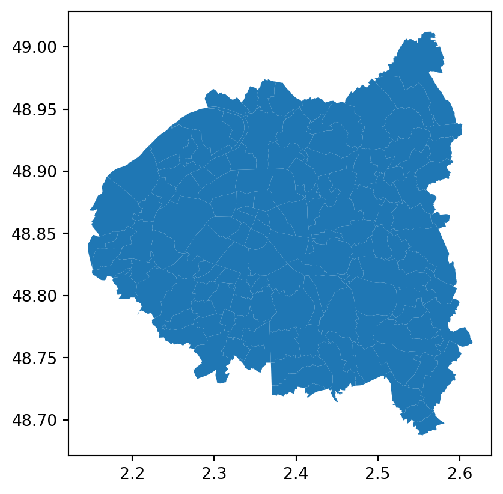

import geopandas as gpd
velib_data = "https://opendata.paris.fr/explore/dataset/velib-emplacement-des-stations/download/?format=geojson&timezone=Europe/Berlin&lang=fr"
stations = gpd.read_file(velib_data)Associer des arrondissements à des données communales avec cartiflette
Important
Cette page est un work in progress! Des exemples dans d’autres langages que Python viendront ultérieurement.
Ce tutoriel vise à illustrer un cas d’usage classique de cartiflette : récupérer de manière flexible un fonds de carte mélangeant les niveaux administratifs différents que sont communes et arrondissements.
Ce besoin classique est illustré à travers la construction d’une carte de la disponibilité de vélibs dans la petite couronne parisienne (Paris intra-muros et départements limitrophes). L’objectif de ce tutoriel est de faire une carte du nombre de vélibs au km² dans chaque arrondissement de Paris intra-muros et chaque commune de la petite couronne.
Pourquoi utiliser
cartiflette pour ce type de besoins ?
- Beaucoup moins de ligne de code à écrire :
- Réduit le temps nécessaire avant d’obtenir une carte exploratoire, ce qui permet de se concentrer sur la construction de celle-ci plutôt que les étapes antérieures
- Réduit la difficulté à mettre à jour le code ;
- Moins de bande passante et d’espace disque utilisé car seule la donnée nécessaire est téléchargée ;
- Moindre besoin d’expertise en SIG car la librairie fournit un
GeoDataFrameprêt à l’emploi ce qui ne nécessite pas une connaissance pointue dans le domaine (système de projection, format shapefile, etc.) ; - Moins de risque d’erreur que lorsqu’on fait soi-même la combinaison de sources à des niveaux administratifs différents (accoler le masque des arrondissements à celui des communes limitrophes nécessite beaucoup de précautions) ;
- Bénéficier de métadonnées supplémentaires sur les communes que les fonds de carte
AdminExpress
Pour en apprendre plus sur le traitement de données géographiques avec
Python
Ce tutoriel présuppose une connaissance minimale de l’écosystème Python pour le traitement de données spatiales. Pour se familiariser à celui-ci, vous pouvez consulter ce cours d’Introduction à Python pour la data science de l’ENSAE ParisTech.
1 Préliminaire: récupération des localisations des stations
Les données Vélib que nous utiliserons sont récupérables directement avec GeoPandas. Il s’agit de la capacité et la localisation des stations sous la forme de latitude-longitude1
Ces données prennent la forme suivante:
| capacity | name | stationcode | geometry | |
|---|---|---|---|---|
| 0 | 17 | Thouin - Cardinal Lemoine | 5016 | POINT (2.34946 48.84505) |
| 1 | 40 | Jouffroy d'Abbans - Wagram | 17026 | POINT (2.30113 48.88197) |
et peuvent être localisées sur une carte de la manière suivante:
Voir le code pour générer la carte 👇️
import folium
from folium.plugins import MarkerCluster
# 1. Calcul du centre de la carte et des bornes sw et ne
stations['lon'] = stations.geometry.x
stations['lat'] = stations.geometry.y
center = stations[['lat', 'lon']].mean().values.tolist()
sw = stations[['lat', 'lon']].min().values.tolist()
ne = stations[['lat', 'lon']].max().values.tolist()
m = folium.Map(location=center, tiles='OpenStreetMap')
marker_cluster = MarkerCluster().add_to(m)
# Add the markers to the MarkerCluster
for i in range(len(stations)):
folium.Marker(
location=[stations.iloc[i]['lat'], stations.iloc[i]['lon']],
popup=stations.iloc[i]['name']
).add_to(marker_cluster)
# Fit the map bounds to the markers
m.fit_bounds([sw, ne])
m- 1
- Cette fonctionnalité permet d’avoir une carte interactive avec zoom progressifs car le nombre de stations est important ce qui ralentirait la carte de toutes les afficher
Make this Notebook Trusted to load map: File -> Trust Notebook
Nous allons avoir besoin des contours d’arrondissements et de communes pour deux raisons:
- Localiser les stations à ce niveau d’analyse par le biais d’une jointure spatiale avant de pouvoir les agréger à ce niveau ;
- Représenter ces données sur une carte présentant Paris intra-muros et les villes limitrophes participant au système Vélib.
2 Récupérer les contours administratifs officiels l’IGN via cartiflette
Les contours administratifs officiels sont produits par l’IGN et utilisent le code officiel géographique (COG) (liste officielle des entités administratives) produit par l’Insee.
La source la plus simple pour répondre à notre besoin est AdminExpress EXPRESS-COG-CARTO-TERRITOIRE. En l’occurrence, seuls quelques espaces nous intéressent: ce sont les villes et arrondissements de la petite couronne parisienne (départements 75, 92, 93 et 94).
Avec la fonction carti_download, l’import de ces données est assez transparent:
from cartiflette import carti_download
# 1. Fonds communaux
contours_villes_arrt = carti_download(
values = ["75", "92", "93", "94"],
crs = 4326,
borders="COMMUNE_ARRONDISSEMENT",
filter_by="DEPARTEMENT",
source="EXPRESS-COG-CARTO-TERRITOIRE",
year=2022)
# 2. Départements
departements = contours_villes_arrt.dissolve("INSEE_DEP")- 1
-
4326 est le code du système de représentation WGS84 (le même que celui des données Vélib). De futures développement de
cartiflettepermettront de récupérer des données avec d’autres projections, notamment les systèmes Lambert. - 2
-
La construction du fonds de carte
departementsse fait simplement avec la méthodedissolve. Il nous sera utile pour contextualiser la carte.
contours_villes_arrt est un GeoDataFrame classique, il est donc possible d’appliquer à celui-ci les méthodes usuelles de GeoPandas par exemple la méthode dissolve ci-dessus. Le masque obtenu pour notre carte est celui-ci
contours_villes_arrt.plot()
Comme nous avons besoin de localiser les stations dans les arrondissements, nous faisons une jointure spatiale entre notre fonds de carte et nos données Vélib
stations_info = gpd.sjoin(
stations, contours_villes_arrt, predicate="within"
)Outre la localisation des stations au niveau communes ou arrondissement, cela permet d’ajouter une ribambelle de métadonnées (des informations annexes) à nos données initiales:
| capacity | name | stationcode | geometry | lon | lat | index_right | INSEE_DEP | INSEE_REG | ID | ... | AAV2020 | TAAV2017 | TDAAV2017 | CATEAAV2020 | BV2012 | LIBELLE_DEPARTEMENT | LIBELLE_REGION | PAYS | SOURCE | AREA | |
|---|---|---|---|---|---|---|---|---|---|---|---|---|---|---|---|---|---|---|---|---|---|
| 0 | 17 | Thouin - Cardinal Lemoine | 5016 | POINT (2.34946 48.84505) | 2.349465 | 48.845047 | 3 | 75 | 11 | ARR_MUNI0000000009736544 | ... | 001 | 5 | 50 | 11 | 75056 | Paris | Île-de-France | France | IGN:EXPRESS-COG-CARTO-TERRITOIRE | NaN |
| 1 | 40 | Jouffroy d'Abbans - Wagram | 17026 | POINT (2.30113 48.88197) | 2.301132 | 48.881973 | 11 | 75 | 11 | ARR_MUNI0000000009736041 | ... | 001 | 5 | 50 | 11 | 75056 | Paris | Île-de-France | France | IGN:EXPRESS-COG-CARTO-TERRITOIRE | NaN |
2 rows × 33 columns
comptes = (
stations_info
.groupby("INSEE_COG")
.agg({"capacity": "sum"})
.reset_index()
)import pandas as pd
contours_villes_arrt["INSEE_COG"] = contours_villes_arrt["INSEE_COG"].astype(str)
comptes["INSEE_COG"] = comptes["INSEE_COG"].astype(str)
comptes_velib_by_city_arrt = contours_villes_arrt.merge(
comptes, how = "inner", on = "INSEE_COG"
)
comptes_velib_by_city_arrt['densite'] = comptes_velib_by_city_arrt['capacity']df_points = comptes_velib_by_city_arrt.copy()
df_points["markersize"] = 12*df_points["densite"].div(comptes_velib_by_city_arrt.to_crs(2154).area.div(10**6).sum())
bins = [-float('inf'), 20, 100, 500, float('inf')]
labels = ["Moins de 20", "Entre 20 et 100", "Entre 100 et 500", "Plus de 500"]
df_points["markercolor"] = pd.cut(df_points['densite'], bins=bins, labels=labels, right=True)
df_points["geometry"] = df_points["geometry"].centroid/tmp/ipykernel_2038/348888411.py:10: UserWarning: Geometry is in a geographic CRS. Results from 'centroid' are likely incorrect. Use 'GeoSeries.to_crs()' to re-project geometries to a projected CRS before this operation.
df_points["geometry"] = df_points["geometry"].centroidimport matplotlib.pyplot as plt
ax = comptes_velib_by_city_arrt.plot(
color="lightgray", edgecolor="grey", figsize=(7, 7), linewidth=0.4, alpha=0.3
)
df_points.plot(
ax=ax,
column="markercolor",
markersize="markersize",
alpha=0.7, # categorical=False,
legend=True,
legend_kwds={"loc": "upper center", "ncol": 2, "bbox_to_anchor": (0.5, 0.05)},
cmap="viridis",
)
departements.boundary.plot(ax=ax, edgecolor="black", alpha=0.3)
ax.axis("off")
ax.set(title="Densité de population dans la petite couronne")
ax.get_legend().set_title("Nombre de vélib par km²")
plt.figtext(
0.3,
0.15,
"Source: IGN - AdminExpress",
wrap=True,
horizontalalignment="center",
fontsize=8,
style="italic",
)Text(0.3, 0.15, 'Source: IGN - AdminExpress')3 Sans cartiflette
import os
import requests
import py7zr
from tqdm import tqdm
# Step 1: Download the file with progress bar
url = "https://data.geopf.fr/telechargement/download/ADMIN-EXPRESS-COG-CARTO/ADMIN-EXPRESS-COG-CARTO_3-1__SHP_WGS84G_FRA_2022-04-15/ADMIN-EXPRESS-COG-CARTO_3-1__SHP_WGS84G_FRA_2022-04-15.7z"
file_name = url.split("/")[-1]if os.path.exists(file_name) is False:
# Streaming download with progress bar
print("Downloading file...")
response = requests.get(url, stream=True)
total_size = int(response.headers.get('content-length', 0))
with open(file_name, 'wb') as file, tqdm(
desc=file_name,
total=total_size,
unit='iB',
unit_scale=True,
unit_divisor=1024,
) as bar:
for chunk in response.iter_content(chunk_size=8192):
size = file.write(chunk)
bar.update(size)
print(f"Downloaded {file_name}")
# Step 2: Extract the .7z file
output_dir = "extracted_files"
os.makedirs(output_dir, exist_ok=True)
print("Extracting the file...")
with py7zr.SevenZipFile(file_name, mode='r') as z:
z.extractall(path=output_dir)
print(f"Extracted to {output_dir}")Downloading file...ADMIN-EXPRESS-COG-CARTO_3-1__SHP_WGS84G_FRA_2022-04-15.7z: 0%| | 0.00/143M [00:00<?, ?iB/s]ADMIN-EXPRESS-COG-CARTO_3-1__SHP_WGS84G_FRA_2022-04-15.7z: 0%| | 40.0k/143M [00:00<09:22, 266kiB/s]ADMIN-EXPRESS-COG-CARTO_3-1__SHP_WGS84G_FRA_2022-04-15.7z: 0%| | 168k/143M [00:00<04:11, 594kiB/s] ADMIN-EXPRESS-COG-CARTO_3-1__SHP_WGS84G_FRA_2022-04-15.7z: 0%| | 720k/143M [00:00<01:16, 1.94MiB/s]ADMIN-EXPRESS-COG-CARTO_3-1__SHP_WGS84G_FRA_2022-04-15.7z: 2%|▏ | 2.85M/143M [00:00<00:21, 6.75MiB/s]ADMIN-EXPRESS-COG-CARTO_3-1__SHP_WGS84G_FRA_2022-04-15.7z: 5%|▌ | 7.59M/143M [00:00<00:09, 15.5MiB/s]ADMIN-EXPRESS-COG-CARTO_3-1__SHP_WGS84G_FRA_2022-04-15.7z: 9%|▊ | 12.4M/143M [00:00<00:06, 21.0MiB/s]ADMIN-EXPRESS-COG-CARTO_3-1__SHP_WGS84G_FRA_2022-04-15.7z: 12%|█▏ | 17.1M/143M [00:01<00:05, 24.3MiB/s]ADMIN-EXPRESS-COG-CARTO_3-1__SHP_WGS84G_FRA_2022-04-15.7z: 15%|█▌ | 21.8M/143M [00:01<00:04, 26.3MiB/s]ADMIN-EXPRESS-COG-CARTO_3-1__SHP_WGS84G_FRA_2022-04-15.7z: 19%|█▊ | 26.6M/143M [00:01<00:04, 27.9MiB/s]ADMIN-EXPRESS-COG-CARTO_3-1__SHP_WGS84G_FRA_2022-04-15.7z: 22%|██▏ | 31.6M/143M [00:01<00:03, 29.4MiB/s]ADMIN-EXPRESS-COG-CARTO_3-1__SHP_WGS84G_FRA_2022-04-15.7z: 25%|██▌ | 36.2M/143M [00:01<00:03, 33.5MiB/s]ADMIN-EXPRESS-COG-CARTO_3-1__SHP_WGS84G_FRA_2022-04-15.7z: 28%|██▊ | 39.6M/143M [00:01<00:03, 31.0MiB/s]ADMIN-EXPRESS-COG-CARTO_3-1__SHP_WGS84G_FRA_2022-04-15.7z: 31%|███ | 44.2M/143M [00:01<00:02, 35.2MiB/s]ADMIN-EXPRESS-COG-CARTO_3-1__SHP_WGS84G_FRA_2022-04-15.7z: 33%|███▎ | 47.8M/143M [00:02<00:03, 33.2MiB/s]ADMIN-EXPRESS-COG-CARTO_3-1__SHP_WGS84G_FRA_2022-04-15.7z: 36%|███▌ | 51.1M/143M [00:02<00:03, 29.5MiB/s]ADMIN-EXPRESS-COG-CARTO_3-1__SHP_WGS84G_FRA_2022-04-15.7z: 38%|███▊ | 54.1M/143M [00:02<00:04, 21.6MiB/s]ADMIN-EXPRESS-COG-CARTO_3-1__SHP_WGS84G_FRA_2022-04-15.7z: 41%|████▏ | 59.2M/143M [00:02<00:03, 27.8MiB/s]ADMIN-EXPRESS-COG-CARTO_3-1__SHP_WGS84G_FRA_2022-04-15.7z: 44%|████▎ | 62.4M/143M [00:02<00:03, 25.0MiB/s]ADMIN-EXPRESS-COG-CARTO_3-1__SHP_WGS84G_FRA_2022-04-15.7z: 46%|████▋ | 66.1M/143M [00:02<00:03, 25.5MiB/s]ADMIN-EXPRESS-COG-CARTO_3-1__SHP_WGS84G_FRA_2022-04-15.7z: 50%|█████ | 71.5M/143M [00:03<00:02, 32.1MiB/s]ADMIN-EXPRESS-COG-CARTO_3-1__SHP_WGS84G_FRA_2022-04-15.7z: 52%|█████▏ | 75.0M/143M [00:03<00:02, 30.4MiB/s]ADMIN-EXPRESS-COG-CARTO_3-1__SHP_WGS84G_FRA_2022-04-15.7z: 55%|█████▍ | 78.4M/143M [00:03<00:02, 31.8MiB/s]ADMIN-EXPRESS-COG-CARTO_3-1__SHP_WGS84G_FRA_2022-04-15.7z: 58%|█████▊ | 83.2M/143M [00:03<00:01, 36.5MiB/s]ADMIN-EXPRESS-COG-CARTO_3-1__SHP_WGS84G_FRA_2022-04-15.7z: 61%|██████ | 87.0M/143M [00:03<00:01, 33.9MiB/s]ADMIN-EXPRESS-COG-CARTO_3-1__SHP_WGS84G_FRA_2022-04-15.7z: 63%|██████▎ | 90.4M/143M [00:03<00:01, 34.2MiB/s]ADMIN-EXPRESS-COG-CARTO_3-1__SHP_WGS84G_FRA_2022-04-15.7z: 66%|██████▋ | 94.8M/143M [00:03<00:01, 37.2MiB/s]ADMIN-EXPRESS-COG-CARTO_3-1__SHP_WGS84G_FRA_2022-04-15.7z: 69%|██████▉ | 98.5M/143M [00:03<00:01, 27.9MiB/s]ADMIN-EXPRESS-COG-CARTO_3-1__SHP_WGS84G_FRA_2022-04-15.7z: 71%|███████▏ | 102M/143M [00:04<00:01, 27.8MiB/s] ADMIN-EXPRESS-COG-CARTO_3-1__SHP_WGS84G_FRA_2022-04-15.7z: 74%|███████▎ | 105M/143M [00:04<00:01, 26.5MiB/s]ADMIN-EXPRESS-COG-CARTO_3-1__SHP_WGS84G_FRA_2022-04-15.7z: 76%|███████▋ | 109M/143M [00:04<00:01, 30.5MiB/s]ADMIN-EXPRESS-COG-CARTO_3-1__SHP_WGS84G_FRA_2022-04-15.7z: 80%|███████▉ | 114M/143M [00:04<00:00, 31.8MiB/s]ADMIN-EXPRESS-COG-CARTO_3-1__SHP_WGS84G_FRA_2022-04-15.7z: 82%|████████▏ | 117M/143M [00:04<00:00, 28.5MiB/s]ADMIN-EXPRESS-COG-CARTO_3-1__SHP_WGS84G_FRA_2022-04-15.7z: 84%|████████▍ | 120M/143M [00:04<00:00, 27.4MiB/s]ADMIN-EXPRESS-COG-CARTO_3-1__SHP_WGS84G_FRA_2022-04-15.7z: 87%|████████▋ | 124M/143M [00:04<00:00, 30.1MiB/s]ADMIN-EXPRESS-COG-CARTO_3-1__SHP_WGS84G_FRA_2022-04-15.7z: 89%|████████▉ | 127M/143M [00:04<00:00, 29.6MiB/s]ADMIN-EXPRESS-COG-CARTO_3-1__SHP_WGS84G_FRA_2022-04-15.7z: 92%|█████████▏| 132M/143M [00:05<00:00, 34.7MiB/s]ADMIN-EXPRESS-COG-CARTO_3-1__SHP_WGS84G_FRA_2022-04-15.7z: 95%|█████████▌| 136M/143M [00:05<00:00, 33.2MiB/s]ADMIN-EXPRESS-COG-CARTO_3-1__SHP_WGS84G_FRA_2022-04-15.7z: 99%|█████████▊| 141M/143M [00:05<00:00, 37.6MiB/s]ADMIN-EXPRESS-COG-CARTO_3-1__SHP_WGS84G_FRA_2022-04-15.7z: 100%|██████████| 143M/143M [00:05<00:00, 28.1MiB/s]Downloaded ADMIN-EXPRESS-COG-CARTO_3-1__SHP_WGS84G_FRA_2022-04-15.7z
Extracting the file...
Extracted to extracted_fileslister l’arborescence compliquée obtenue
extracted_files/
└── ADMIN-EXPRESS-COG-CARTO_3-1__SHP_WGS84G_FRA_2022-04-15/
├── ADMIN-EXPRESS-COG-CARTO/
│ ├── 1_DONNEES_LIVRAISON_2022-04-15/
│ │ ├── ADECOGC_3-1_SHP_WGS84G_FRA/
│ │ │ ├── ARRONDISSEMENT.cpg
│ │ │ ├── ARRONDISSEMENT.dbf
│ │ │ ├── ARRONDISSEMENT.prj
│ │ │ ├── ARRONDISSEMENT.shp
│ │ │ ├── ARRONDISSEMENT.shx
│ │ │ ├── ARRONDISSEMENT_MUNICIPAL.cpg
│ │ │ ├── ARRONDISSEMENT_MUNICIPAL.dbf
│ │ │ ├── ARRONDISSEMENT_MUNICIPAL.prj
│ │ │ ├── ARRONDISSEMENT_MUNICIPAL.shp
│ │ │ ├── ARRONDISSEMENT_MUNICIPAL.shx
│ │ │ ├── CANTON.cpg
│ │ │ ├── CANTON.dbf
│ │ │ ├── CANTON.prj
│ │ │ ├── CANTON.shp
│ │ │ ├── CANTON.shx
│ │ │ ├── CHFLIEU_ARRONDISSEMENT_MUNICIPAL.cpg
│ │ │ ├── CHFLIEU_ARRONDISSEMENT_MUNICIPAL.dbf
│ │ │ ├── CHFLIEU_ARRONDISSEMENT_MUNICIPAL.prj
│ │ │ ├── CHFLIEU_ARRONDISSEMENT_MUNICIPAL.shp
│ │ │ ├── CHFLIEU_ARRONDISSEMENT_MUNICIPAL.shx
│ │ │ ├── CHFLIEU_COMMUNE.cpg
│ │ │ ├── CHFLIEU_COMMUNE.dbf
│ │ │ ├── CHFLIEU_COMMUNE.prj
│ │ │ ├── CHFLIEU_COMMUNE.shp
│ │ │ ├── CHFLIEU_COMMUNE.shx
│ │ │ ├── CHFLIEU_COMMUNE_ASSOCIEE_OU_DELEGUEE.cpg
│ │ │ ├── CHFLIEU_COMMUNE_ASSOCIEE_OU_DELEGUEE.dbf
│ │ │ ├── CHFLIEU_COMMUNE_ASSOCIEE_OU_DELEGUEE.prj
│ │ │ ├── CHFLIEU_COMMUNE_ASSOCIEE_OU_DELEGUEE.shp
│ │ │ ├── CHFLIEU_COMMUNE_ASSOCIEE_OU_DELEGUEE.shx
│ │ │ ├── COLLECTIVITE_TERRITORIALE.cpg
│ │ │ ├── COLLECTIVITE_TERRITORIALE.dbf
│ │ │ ├── COLLECTIVITE_TERRITORIALE.prj
│ │ │ ├── COLLECTIVITE_TERRITORIALE.shp
│ │ │ ├── COLLECTIVITE_TERRITORIALE.shx
│ │ │ ├── COMMUNE.cpg
│ │ │ ├── COMMUNE.dbf
│ │ │ ├── COMMUNE.prj
│ │ │ ├── COMMUNE.shp
│ │ │ ├── COMMUNE.shx
│ │ │ ├── COMMUNE_ASSOCIEE_OU_DELEGUEE.cpg
│ │ │ ├── COMMUNE_ASSOCIEE_OU_DELEGUEE.dbf
│ │ │ ├── COMMUNE_ASSOCIEE_OU_DELEGUEE.prj
│ │ │ ├── COMMUNE_ASSOCIEE_OU_DELEGUEE.shp
│ │ │ ├── COMMUNE_ASSOCIEE_OU_DELEGUEE.shx
│ │ │ ├── DEPARTEMENT.cpg
│ │ │ ├── DEPARTEMENT.dbf
│ │ │ ├── DEPARTEMENT.prj
│ │ │ ├── DEPARTEMENT.shp
│ │ │ ├── DEPARTEMENT.shx
│ │ │ ├── EPCI.cpg
│ │ │ ├── EPCI.dbf
│ │ │ ├── EPCI.prj
│ │ │ ├── EPCI.shp
│ │ │ ├── EPCI.shx
│ │ │ ├── REGION.cpg
│ │ │ ├── REGION.dbf
│ │ │ ├── REGION.prj
│ │ │ ├── REGION.shp
│ │ │ └── REGION.shx
│ │ └── ADECOGC_3-1_SHP_WGS84G_FRA.md5
│ ├── 1_DONNEES_LIVRAISON_2022-04-15.md5
│ ├── 2_METADONNEES_LIVRAISON_2022-04-15/
│ │ ├── ADECOGC_3-1_SHP_WGS84G_FRA/
│ │ │ ├── IGNF_ADECOGC_3-1_SHP_WGS84G_FRA.html
│ │ │ └── IGNF_ADECOGC_3-1_SHP_WGS84G_FRA.xml
│ │ └── ADECOGC_3-1_SHP_WGS84G_FRA.md5
│ ├── 2_METADONNEES_LIVRAISON_2022-04-15.md5
│ └── LISEZ-MOI.pdf
└── ADMIN-EXPRESS-COG-CARTO.md5nombre de fichiers
import glob
# List all files recursively using glob
file_list = glob.glob(f"{directory}/**/*", recursive=True)
# Filter out directories (we want to count only files)
file_list = [file for file in file_list if not os.path.isdir(file)]
len(file_list)68volume sur disque: zippé et dézippé
import os
import math
# Path to the zipped file
zipped_file = "ADMIN-EXPRESS-COG-CARTO_3-1__SHP_WGS84G_FRA_2022-04-15.7z"
# Get the size of the zipped file in bytes
zipped_size = os.path.getsize(zipped_file)
# Convert to a human-readable format (e.g., MB, GB)
def convert_size(size_bytes):
if size_bytes == 0:
return "0B"
size_name = ("B", "KB", "MB", "GB", "TB")
i = int(math.floor(math.log(size_bytes, 1024)))
p = math.pow(1024, i)
s = round(size_bytes / p, 2)
return f"{s} {size_name[i]}"
print(f"Zipped file size: {convert_size(zipped_size)}")Zipped file size: 142.86 MBfrom pathlib import Path
# Path to the directory containing unzipped files
unzipped_dir = "./extracted_files"
root_directory = Path(unzipped_dir)
size_dir = sum(f.stat().st_size for f in root_directory.glob('**/*') if f.is_file())
convert_size(size_dir)'240.67 MB'Footnotes
Le système de coordonnées WGS84 (World Geodetic System 1984) est un système de référence géodésique utilisé pour représenter les positions géographiques sur la Terre. Ce système est utilisé par la plupart des applications GPS et des fournisseurs de tuiles vectorielles comme
OpenStreetMap.↩︎